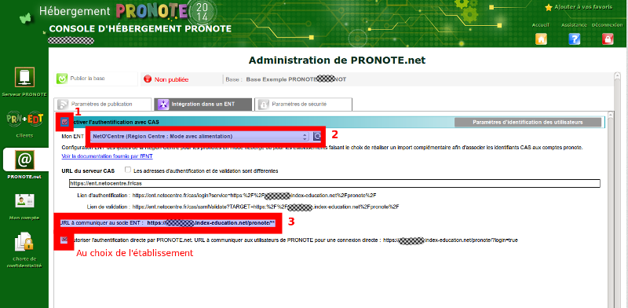
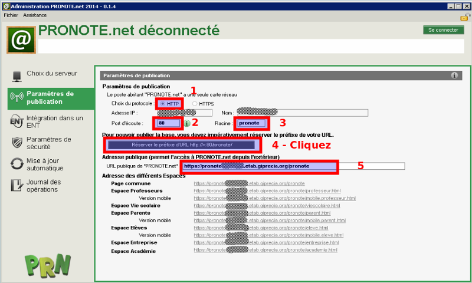
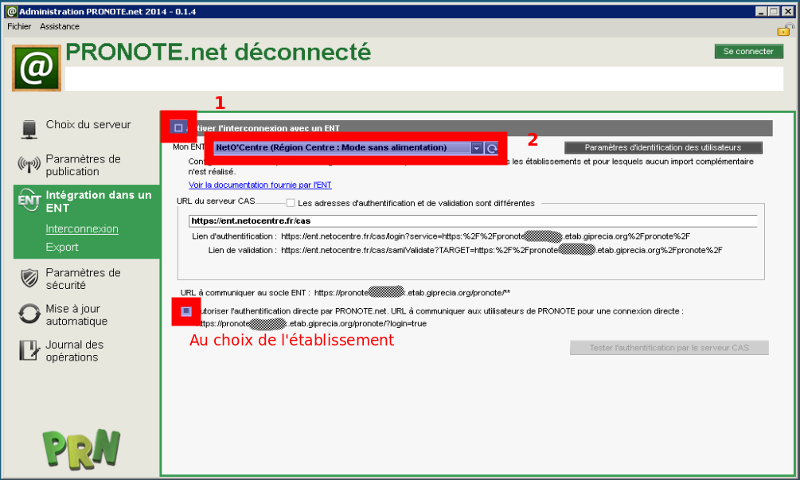

Configuration d'un Pronote.net hébergé chez Index Éducation
pour ce type d'installation, il y 2 possibilités :
- pratiquer une double authentification
- effectuer un rapprochement des comptes PRONOTE et ENT.
- Dans le premier cas après s'être authentifié à l'ENT l'utilisateur devra saisir ses identifiants Pronote lors de son premier accès à Pronote au travers de l'ENT.
Par la suite, l'identification Pronote ne sera plus, car Pronote aura conservé l'identifiant ENT de la personne.
Par contre si un nouveau compte ENT pour la personne est généré, il faudra supprimer l'ancien identifiant ENT (nommé identifiant CAS dans pronote)
associé au compte Pronote de la base Pronote.
Cette configuration est très satisfaisante pour respecter le consentement des utilisateurs au rapprochement de leur compte ENT avec leur compte Pronote,
mais elle ajoute une complexité importante à l'administration du dispositif (compte ENT + compte Pronote, incompréhensions sur les mots de passe oubliés, ...).
- Dans le second cas le
rapprochement des comptes ENT et Pronote est effectué par l'administrateur Pronote via des imports complémentaires dans la base Pronote.
pour effectuer la configuration, il faut se rendre sur la console d'hébergement, normalement accessible ici :
https://hebergement.index-education.net/.
Si vous avez enregistré votre certificat vous devriez pouvoir accéder à la configuration du Pronote.net.
Si ce n'est pas le cas, Index Éducation fournit les documentations et l'assistance (via son support SAV) nécessaires.
Voici une copie d'écran (basée sur Pronote 2014, mais le principe est le même sur les versions suivantes)
de la configuration à réaliser afin de rendre accessible Pronote en mode hébergé dans l'ENT :

Sur cet écran, il faut effectuer les opérations suivantes :
- Cocher la case "Activer l'authentification avec CAS"
- Choisir, pour "Mon ENT" :
"NetO'centre (Région Centre-Val de Loire : Mode avec alimentation)"
- Si en parallèle à la connexion ENT, l'établissement souhaite donner accès à Pronote en connexion directe, c'est à dire avec les identifiants Pronote,
il faut cocher la case correspondante.
Configuration d'un Pronote.net installé en établissement
Quand Pronote est hébergé en établissement, la DSI du rectorat est en charge de la configuration de la DMZ sur le AMON,
et de la mise en place d'un accés sécurisé permettant d'accèder au Pronote via l'ENT.
Ce lien est de ce type : https://pronote{UAI}.etab.giprecia.org
Selon les cas cette adresse peut être revue pour limiter la longeur de la chaine de caractères.
Dans tous les cas, elle doit être connue de l'établissement afin de pouvoir l'utiliser lors des installations de Pronote.
La configuration se fait dans 2 écrans Pronote (les copies concernent Pronte 2014, mais le principe est inchangé dans les versions supérieures).
Le premier concerne les paramètres de publication :

Il faut renseigner les paramètres suivants :
- Choix du protocole : http
- Port d'écoute : 80
- Cliquer sur le bouton Réserver le préfixe d'URL
- URL publique de "Pronote.net" : https://pronote{UAI}.etab.giprecia.org

Il faut renseigner les paramètres suivants :
- Cocher "Activer l'interconnexion avec un ENT"
- Choisir, pour "Mon ENT" :
NetO'centre (Région Centre-Val de Loire : Mode avec alimentation)"
Pour terminer l'installation, il reste à réaliser une procédure un peu contraignante mais nécessaire,
l'import de fichiers complémentaires à partir d'exports de l'ENT pour permettre le
rapprochement des comptes ENT avec les comptes Pronote dans la base Pronote.
C'est cette procédure qui permet de réaliser une authentification transparente sur l'application pronote.
NOTE : il est possible de ne pas réaliser un rapprochement des comptes en choisissant la configuration
"Touraine e-school/NetO'Centre (...: Mode sans alimentation)", mais cela n'est pas conseillé car source d'erreurs
non détectables avant que l'utilisateur n'accède à l'application Pronote dans l'ENT. Le message d'erreur affiché par Pronote est en général
assez peu explicite, et peut faire perdre du temps pour l'établissement ou le support.